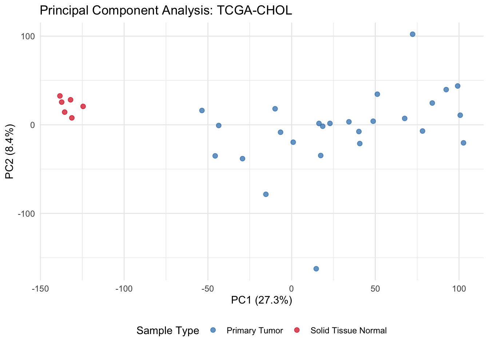
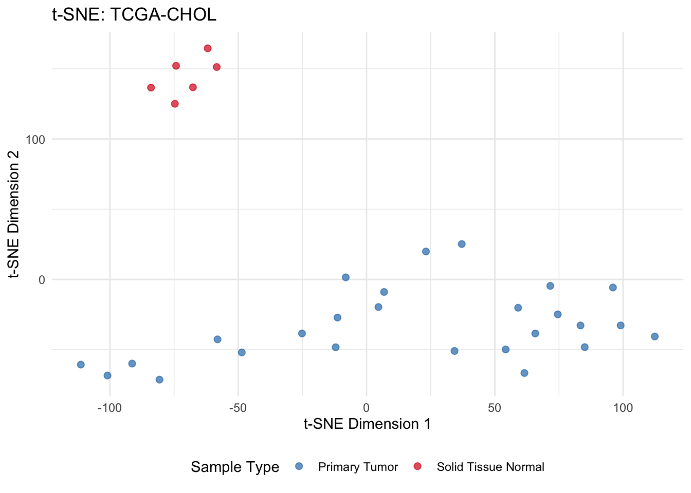
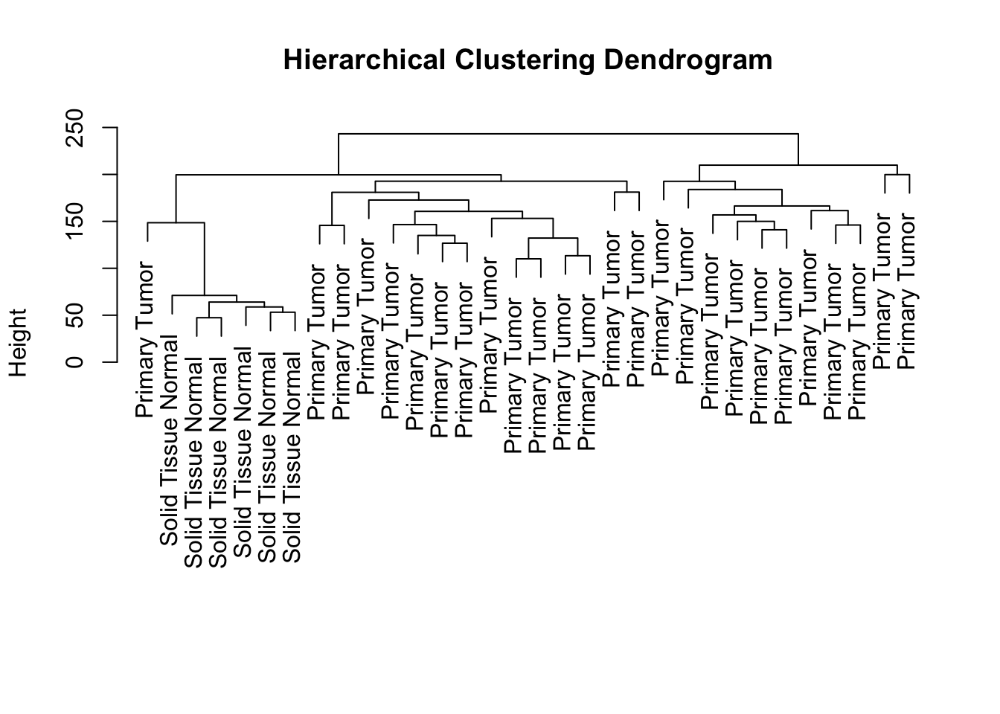
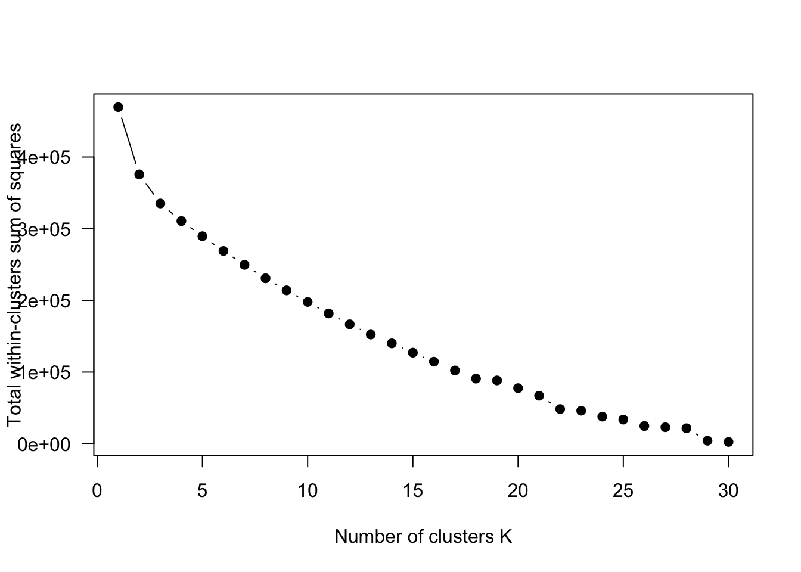
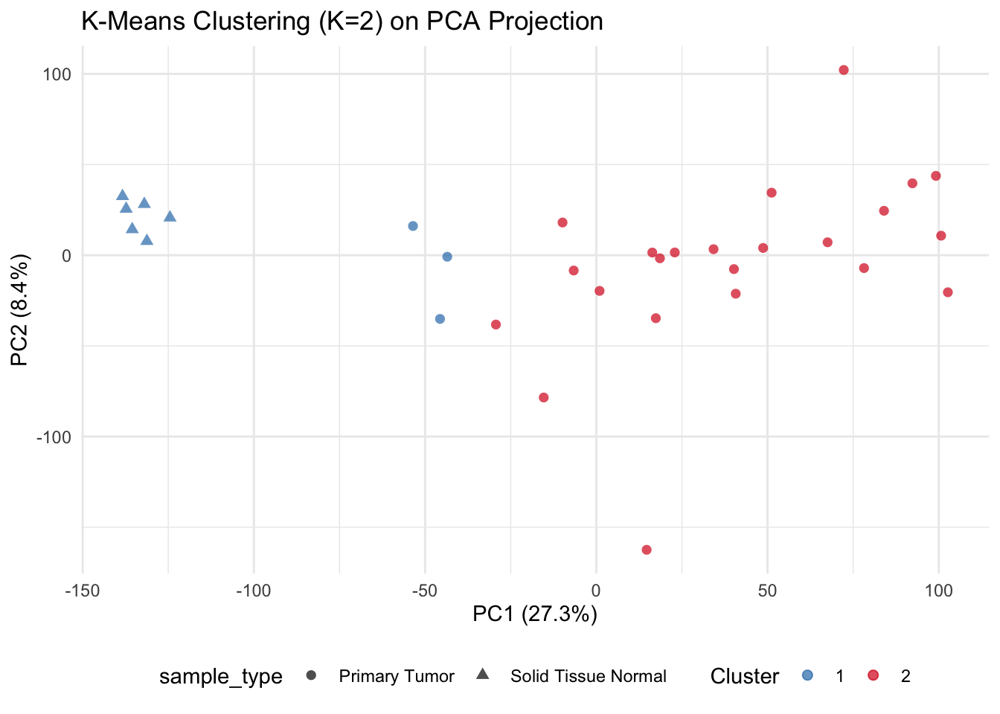
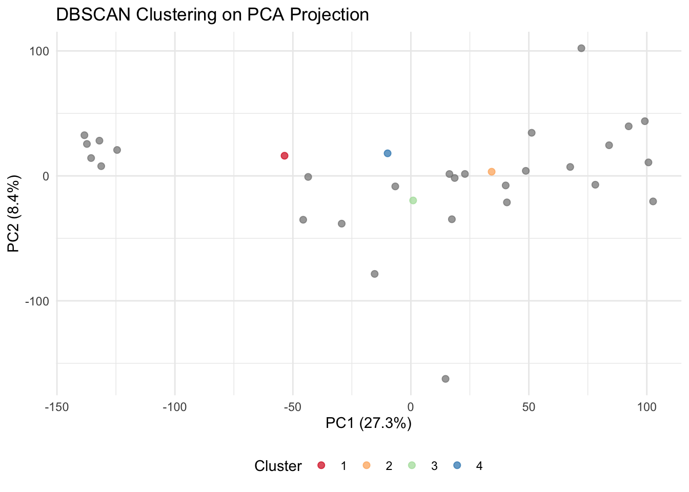

3Unsupervised Machine Learning - Dimensionality Reduction and Clustering
In biological research, unsupervised learning serves as the primary tool for exploratory data analysis (EDA). Unlike supervised methods that require prior labeling, unsupervised algorithms identify inherent structures, patterns, and anomalies within high-dimensional datasets without external guidance. For datasets such as the TCGA-CHOL transcriptomics cohort, these techniques are essential for assessing data quality, identifying technical artifacts (batch effects), and discovering novel biological subgroups.
3.1 The Geometry of High-Dimensional Biological Data
Transcriptomics data typically resides in a space where \(p \gg n\). Visualizing 20,000 dimensions is physically impossible; therefore, we rely on dimensionality reduction to project this information into a 2D or 3D manifold.
The primary objectives in this phase are:
Feature Compression: Reducing the number of variables while retaining the maximum amount of biological variance.
Noise Reduction: Filtering out stochastic variation that does not contribute to the global structure of the data.
Visualization: Mapping samples into a coordinate system where proximity represents biological similarity.
3.2 Principal Component Analysis (PCA)
PCA is a linear transformation that identifies the axes (Principal Components) along which the variance of the data is maximized. It is an orthogonal transformation, meaning each subsequent component is uncorrelated with the previous ones.
3.2.1 Mathematical Intuition
Each Principal Component (\(PC\)) is a linear combination of the original variables:
Warning: package 'embed' was built under R version 4.4.3
# Define the PCA Recipepca_rec <-recipe(sample_type ~ ., data = train_data_chol) %>%step_zv(all_predictors()) %>%step_normalize(all_predictors()) %>%step_pca(all_predictors(), num_comp =5)# Train the recipe on the CHOL training setpca_estimates <-prep(pca_rec)# Extract the coordinates for visualizationpca_plot_data <-juice(pca_estimates)# Visualization of PC1 vs PC2pca_plot_data %>%ggplot() +aes(x = PC1, y = PC2, color = sample_type) +geom_point(alpha =0.7, size =2) +scale_color_manual(values =c("Primary Tumor"="#2c7bb6", "Solid Tissue Normal"="#d7191c")) +theme_minimal() +labs(title ="Principal Component Analysis: TCGA-CHOL",x =paste0("PC1 (", round(pca_estimates$steps[[3]]$res$sdev[1]^2/sum(pca_estimates$steps[[3]]$res$sdev^2)*100, 1), "%)"),y =paste0("PC2 (", round(pca_estimates$steps[[3]]$res$sdev[2]^2/sum(pca_estimates$steps[[3]]$res$sdev^2)*100, 1), "%)"), color ="Sample Type") +theme(legend.position ="bottom")

When we use the PCA for dimensionality reduction, we can visualize the first two principal components (PC1 and PC2) to assess the separation between “Primary Tumor” and “Solid Tissue Normal” samples. The percentage of variance explained by each component is also displayed on the axes, providing insight into how much of the original data’s variability is captured in this 2D representation. Note that, in this case, we are able to see a clear separation between the two sample types, indicating that the PCA has successfully captured the underlying structure of the data. However, PCA may not always be sufficient to capture complex non-linear relationships, which is where manifold learning techniques like t-SNE and UMAP come into play.
3.3 Non-Linear Dimensionality Reduction
While PCA is restricted to linear projections, biological systems often exhibit non-linear relationships and hierarchical structures that require manifold learning. These techniques aim to preserve the high-dimensional proximity of samples in a low-dimensional space.
t-SNE is a probabilistic technique specifically designed to visualize high-dimensional clusters. It converts Euclidean distances between samples into conditional probabilities that represent similarities.
Mechanism: It uses a Student’s t-distribution in the low-dimensional space to alleviate the “crowding problem,” where points in the center of a cluster tend to collapse onto each other.
Perplexity: The most critical hyperparameter. It balances the attention between local and global aspects of the data. Meaning that, a low perplexity (e.g., 5) focuses on local structure, while a high perplexity (e.g., 50) captures more global relationships. Values between 5 and 50 are typical for biological datasets.
Limitation: t-SNE often fails to preserve global structure; the distance between clusters in the plot is not always meaningful.
library(Rtsne)# Prepare data for t-SNE# Assuming 'train_data_chol' is a data frame with the sample type in the first column and gene expression in the remaining columns# We will use the gene expression data for t-SNEtsne_data <- train_data_chol %>%select(-sample_type) %>%as.matrix()# Run t-SNE# Set a random seed for reproducibilityset.seed(123)tsne_result <-Rtsne(tsne_data, perplexity =5, verbose =TRUE, max_iter =1000)
Performing PCA
Read the 32 x 32 data matrix successfully!
Using no_dims = 2, perplexity = 5.000000, and theta = 0.500000
Computing input similarities...
Building tree...
Done in 0.00 seconds (sparsity = 0.636719)!
Learning embedding...
Iteration 50: error is 57.252033 (50 iterations in 0.00 seconds)
Iteration 100: error is 54.104956 (50 iterations in 0.00 seconds)
Iteration 150: error is 62.740728 (50 iterations in 0.00 seconds)
Iteration 200: error is 61.621545 (50 iterations in 0.00 seconds)
Iteration 250: error is 65.700002 (50 iterations in 0.00 seconds)
Iteration 300: error is 1.770139 (50 iterations in 0.00 seconds)
Iteration 350: error is 1.152757 (50 iterations in 0.00 seconds)
Iteration 400: error is 0.939045 (50 iterations in 0.00 seconds)
Iteration 450: error is 0.620704 (50 iterations in 0.00 seconds)
Iteration 500: error is 0.490747 (50 iterations in 0.00 seconds)
Iteration 550: error is 0.342764 (50 iterations in 0.00 seconds)
Iteration 600: error is 0.980812 (50 iterations in 0.00 seconds)
Iteration 650: error is 0.864494 (50 iterations in 0.00 seconds)
Iteration 700: error is 0.754805 (50 iterations in 0.00 seconds)
Iteration 750: error is 0.699899 (50 iterations in 0.00 seconds)
Iteration 800: error is 0.635402 (50 iterations in 0.00 seconds)
Iteration 850: error is 0.533516 (50 iterations in 0.00 seconds)
Iteration 900: error is 0.406374 (50 iterations in 0.00 seconds)
Iteration 950: error is 0.382985 (50 iterations in 0.00 seconds)
Iteration 1000: error is 0.307605 (50 iterations in 0.00 seconds)
Fitting performed in 0.02 seconds.
# Create a data frame for plottingtsne_plot_data <-data.frame(X = tsne_result$Y[, 1],Y = tsne_result$Y[, 2],sample_type = train_data_chol$sample_type)# Visualization of t-SNE results# Using ggplot2 for visualizationtsne_plot_data %>%ggplot() +aes(x = X, y = Y, color = sample_type) +geom_point(alpha =0.7, size =2) +scale_color_manual(values =c("Primary Tumor"="#2c7bb6", "Solid Tissue Normal"="#d7191c")) +theme_minimal() +labs(title ="t-SNE: TCGA-CHOL",x ="t-SNE Dimension 1",y ="t-SNE Dimension 2", color ="Sample Type") +theme(legend.position ="bottom")

Note that t-SNE can be computationally intensive, especially with large datasets, and the results can vary between runs if the random seed is not set. Additionally, while t-SNE can reveal clusters, it may not accurately represent the distances between those clusters, which is a critical consideration when interpreting the results in a biological context. Moreover, we can clearly see that t-SNE has successfully separated the “Primary Tumor” and “Solid Tissue Normal” samples, but the relative positioning of the clusters does not necessarily reflect their biological relationships.
3.3.2 Uniform Manifold Approximation and Projection (UMAP)
UMAP has largely superseded t-SNE in computational biology (particularly in single-cell transcriptomics) due to its superior speed and better preservation of global data topology.
3.3.2.1 The Theoretical Foundation
UMAP is grounded in Riemannian geometry and algebraic topology. It assumes that the data is uniformly distributed on a locally connected manifold. The algorithm constructs a fuzzy simplicial set representation of this manifold and then finds a low-dimensional layout that has the most similar topological structure.
3.3.2.2 Advantages for Biological Data
Global vs. Local Balance: Unlike t-SNE, the relative distances between clusters in a UMAP plot often reflect the biological distance between groups (e.g., developmental trajectories or metabolic similarity).
Performance: UMAP is significantly faster and more memory-efficient than t-SNE, making it suitable for large-scale multi-omic integrations.
Consistency: UMAP is more stable across different runs, provided a random seed is set.
3.3.2.3 Hyperparameter Optimization
n_neighbors: This defines the size of the local neighborhood used to learn the manifold. Small values focus on fine-grained local structure (e.g., identifying rare cell subtypes), while large values focus on the global structure of the entire dataset.
min_dist: Determines how tightly the algorithm is allowed to pack points together. Lower values lead to tighter, more discrete clusters, while higher values preserve the broad sense of the data’s shape.
In this UMAP visualization, we can observe that the “Primary Tumor” and “Solid Tissue Normal” samples are well-separated, and the relative distances between clusters may provide insights into their biological relationships. We do find, however, one PT within the ST cluster. UMAP’s ability to preserve both local and global structures makes it a powerful tool for exploratory data analysis in high-dimensional biological datasets.
3.4 Clustering
Clustering algorithms are used to group samples based on their similarity in the high-dimensional space. Common methods include hierarchical clustering, k-means, and density-based clustering (e.g., DBSCAN). These techniques can help identify subgroups of samples that may correspond to distinct biological states or disease subtypes.
3.5 Hierarchical Clustering
Hierarchical clustering builds a tree-like structure (dendrogram) that represents the nested grouping of samples based on their pairwise distances. The choice of distance metric (e.g., Euclidean, Manhattan) and linkage method (e.g., complete, average) can significantly influence the resulting clusters.
In R, we can perform hierarchical clustering using the hclust function, and visualize the results with a dendrogram.
# Compute distance matrix# A common choice for gene expression data is the Euclidean distancedistance_matrix <-dist( train_processed %>%select(-sample_type), method ="euclidean")# Perform hierarchical clustering# We can use the complete linkage method, which considers the maximum distance between points in different clustershc <-hclust(distance_matrix, method ="complete")# Plot the dendrogramplot(hc, labels = train_data_chol$sample_type, main ="Hierarchical Clustering Dendrogram", xlab ="", sub ="")

In this dendrogram, samples that are more similar to each other (based on their gene expression profiles) will be grouped together. We can visually inspect the clusters to see if they correspond to the “Primary Tumor” and “Solid Tissue Normal” sample types. Additionally, we can cut the dendrogram at a specific height to define distinct clusters and analyze their biological significance.
Note: We can also use the Hierarchical Cluter to confirm the results from the Supervised Machine Learning chapter, where we will build predictive models based on the insights gained from our unsupervised analyses. By comparing the clusters identified through hierarchical clustering with the predictions from our supervised models, we can validate the biological relevance of our findings and potentially uncover novel subtypes or patterns within the data.
3.5.1 K-Means Clustering
K-means clustering partitions the data into K distinct clusters by minimizing the within-cluster sum of squares. It is a simple and efficient algorithm but requires the number of clusters (K) to be specified in advance, which can be a limitation when the optimal number of clusters is unknown.
A way to identify the optimal number of clusters is to use the Elbow Method, which plots the total within-cluster sum of squares against the number of clusters and looks for an “elbow” point where the rate of decrease sharply changes.
# Determine the optimal number of clusters using the Elbow Method# We will compute the total within-cluster sum of squares for a range of K valueswss <-sapply(1:30, function(k) {kmeans(train_processed %>%select(-sample_type), centers = k, nstart =25)$tot.withinss})# Plot the Elbow Methodplot(1:30, wss,type ="b", las =1, pch =19, xlab ="Number of clusters K", ylab ="Total within-clusters sum of squares")

Once we have determined the optimal number of clusters (let us use K=2), we can perform K-means clustering and visualize the results.
# Perform K-means clustering with K=2set.seed(123)kmeans_result <-kmeans(train_processed %>%select(-sample_type), centers =2,nstart =25)# Add cluster assignments to the original datatrain_processed$cluster <-as.factor(kmeans_result$cluster)# Visualize the clusters # We can use PCA to visualize the clusters in a 2D spacepca_plot_data %>%mutate(cluster = train_processed$cluster) %>%ggplot() +aes(x = PC1, y = PC2, color = cluster, shape = sample_type) +geom_point(alpha =0.7, size =2) +scale_color_manual(values =c("1"="#2c7bb6","2"="#d7191c")) +theme_minimal() +labs(title ="K-Means Clustering (K=2) on PCA Projection",x =paste0("PC1 (", round(pca_estimates$steps[[3]]$res$sdev[1]^2/sum(pca_estimates$steps[[3]]$res$sdev^2)*100, 1), "%)"),y =paste0("PC2 (", round(pca_estimates$steps[[3]]$res$sdev[2]^2/sum(pca_estimates$steps[[3]]$res$sdev^2)*100, 1), "%)"), color ="Cluster") +theme(legend.position ="bottom")

In this visualization, we can see how the K-means algorithm has partitioned the samples into two clusters. We can also compare these clusters with the original sample types (Primary Tumor vs Solid Tissue Normal) to assess how well the clustering corresponds to known biological categories. There are few misclassifications, but overall, the clusters seem to align well with the sample types, indicating that K-means has successfully captured the underlying structure of the data.
3.5.2 Density-Based Spatial Clustering of Applications with Noise (DBSCAN)
DBSCAN is a density-based clustering algorithm that identifies clusters based on the density of data points. It is particularly effective at identifying clusters of arbitrary shape and can handle noise (outliers) in the data. DBSCAN requires two parameters: eps, which defines the radius of the neighborhood around a point, and minPts, which specifies the minimum number of points required to form a dense region.
library(dbscan)
Warning: package 'dbscan' was built under R version 4.4.3
Attaching package: 'dbscan'
The following object is masked from 'package:stats':
as.dendrogram
# Prepare data for DBSCAN# We will use the PCA-reduced data for DBSCAN to reduce computational complexitydbscan_data <- pca_plot_data %>%select(PC1, PC2) %>%as.matrix()# Run DBSCAN# Set eps to a value that captures the local density of points and minPts to a value that reflects the expected cluster sizedbscan_result <-dbscan(dbscan_data, eps =0.01, minPts =1)dbscan_result
# Add cluster assignments to the original datapca_plot_data$cluster <-as.factor(dbscan_result$cluster)# Visualize the DBSCAN clusterspca_plot_data %>%ggplot() +aes(x = PC1, y = PC2, color = cluster) +geom_point(alpha =0.7, size =2) +scale_color_manual(values =c("0"="#2c7bb6", # Cluster 0 (noise)"1"="#d7191c", # Cluster 1"2"="#fdae61", # Cluster 2"3"="#abdda4", # Cluster 3"4"="#2b83ba")) +# Cluster 4theme_minimal() +labs(title ="DBSCAN Clustering on PCA Projection",x =paste0("PC1 (", round(pca_estimates$steps[[3]]$res$sdev[1]^2/sum(pca_estimates$steps[[3]]$res$sdev^2)*100, 1), "%)"),y =paste0("PC2 (", round(pca_estimates$steps[[3]]$res$sdev[2]^2/sum(pca_estimates$steps[[3]]$res$sdev^2)*100, 1), "%)"), color ="Cluster") +theme(legend.position ="bottom")

When applying DBSCAN, we cannot identify clusters based on the density of points in the PCA-reduced space. The algorithm will classify points as core points (part of a cluster), border points (on the edge of a cluster), or noise (outliers). In this example, we can see that DBSCAN has identified only one cluster, and we can compare these clusters with the original sample types to assess their biological relevance. Depending on the chosen parameters, DBSCAN may classify some samples as noise, which can be useful for identifying outliers in the data.
3.6 Conclusion
We have explored various unsupervised machine learning techniques for dimensionality reduction and clustering in the context of high-dimensional biological data. PCA provided a linear projection that captured the major sources of variance, while t-SNE and UMAP offered non-linear embeddings that revealed more complex relationships between samples. Clustering algorithms like hierarchical clustering, K-means, and DBSCAN allowed us to identify groups of similar samples based on their gene expression profiles.
We will now proceed to the Supervised Machine Learning chapter, where we will build predictive models based on the insights gained from our unsupervised analyses.